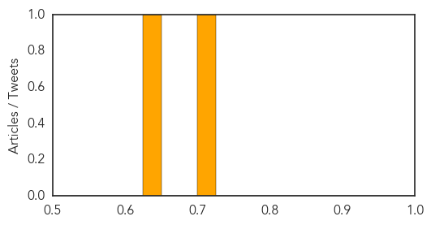
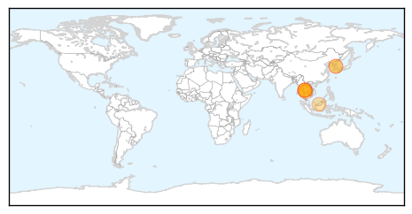

West Nile Virus
30-Day Web Trend
4 alerts, 3 warnings
30-Day Twitter Trend
3 alerts, 0 warnings

Article Locations
Article Confidences
Top Articles:
Top Tweets:
-
No tweets found for Jun 22, 2015
Yellow Fever
30-Day Web Trend
1 alerts, 0 warnings

30-Day Twitter Trend
0 alerts, 0 warnings

Article Locations
Article Confidences

Top Articles:
- 0.999
- UPDATE – Thai Muslims traveling to Hajj to be screened for MERS
- 0.999
- Thai Muslims traveling to Hajj to be screened for MERS
- 0.998
- Thai Muslims traveling to Hajj to be screened for MERS
- 0.998
- Thai Muslims traveling to Hajj to be screened for MERS
- 0.970
- Thailand to implement health checks for haj pilgrims
- 0.962
- Thailand Imposes Strict Health Measures For Muslim Hajj Pilgrims To Cease (Mers)
- 0.953
- MERS: Thailand Rolls Out Precautionary Measures For Hajj Pilgrims
- 0.948
- Haj pilgrimage spurs new MERS outbreak fear in Thailand
Top Tweets:
-
No tweets found for Jun 22, 2015